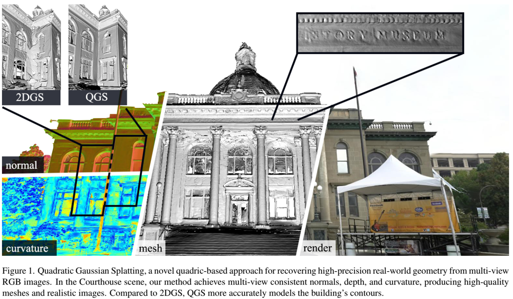
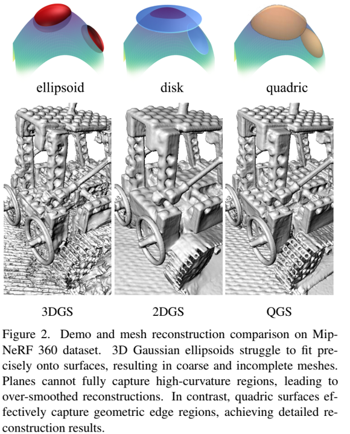
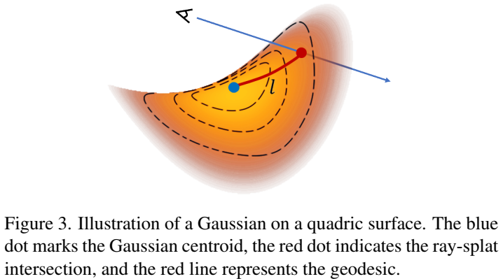

摘要
最近，3D高斯泼溅（3DGS）因其在神经辐射场（NeRF）之上的卓越的渲染质量和速度而受到关注。为了解决3DGS在表面表示中的限制，2D高斯泼溅（2DGS）引入圆盘（disks）作为场景基元，来建模和重构来自多视图图像的几何图形。然而，圆盘的一阶线性近似常常导致过平滑的结果。我们提出二次高斯泼溅（QGS），一种新方法，它用二次表面替代圆盘，增强了几何拟合。QGS在非欧空间定义高斯分布，允许基元捕获更复杂的纹理。作为二阶表面近似，QGS还渲染空间曲率来指导法线一致性项，来有效减少过平滑。而且，QGS是2DGS的泛化版本，取得更准确和细致的重建，已由DTU和TNT上的实验验证，展示了它超越了几何重建中大多数先进方法的有效性。我们的代码将会作为开源发布。项目在： https://quadraticgs.github.io/QGS

引言
表面重建和真实新视图合成（NVS）是计算机图形和视觉中的重要任务。它们的目标是从来自不同视角的图像中恢复密集几何结构，并渲染照片级真实感的图像。最近，3D高斯泼溅（3DGS）通过结合传统泼溅技术和端到端的优化，已经在渲染质量和速度中均超越基于神经辐射场（NeRF）的方法。随后，基于GS的方法在动态重建、编辑和大尺度场景重建中快速发展。
然而，普通的泼溅忽略了z轴的高斯贡献，并使用近似[16,39]。因此，即使在场景表面偏移的情况下，它也可以渲染高质量、多视图一致的纹理，这使得捕捉准确的几何体变得具有挑战性。在随后的工作中[4,12,19,35,36]，ray-splat交互在2D中计算用于检索高斯权重，这是准确场景几何恢复的关键因素。在使用高斯椭球体作为基元[35,36]的方法中，ray-splat交互依赖于视图方向，限制了不同视图间的法线一致性。相反，使用高斯圆盘作为基元的方法[12,19]可以确保多视图一致性几何，由于它们的基于表面的属性，促进了多视图几何一致性的结合[4,19]。然而，圆盘，作为几何体的一阶拟合，常常导致过于平滑的重建，如图2所示。

早期工作[26,31,40]表明，surfel(点元)元素可以有效表示复杂场景几何，如原子模型。基于此，2DGS[12]结合高斯分布和圆盘元素取得先进重建，启发了我们的方法。本文中，我们提出一种新的基于表面的渲染方法，称之为二次高斯泼溅（QGS），用于场景重建和新视图合成。该方法通过更高阶表示增强了场景基元的几何拟合，实现了二次模型表面网格（mesh）的准确提取。
不同于先前在欧式空间中操作的方法，如3DGS或2DGS，QGS在二次抛物面（paraboloid）定义高斯分布，可以在凸形和凹形之间连续过渡，提供了更加灵活的几何拟合。使用抛物面进行泼溅的关键技术在于实现非欧空间中基于测地距离（geodesic distances）的高斯分布，它允许分布的能量集中在表面，来高效捕捉复杂几何纹理。相较于2DGS中的一阶近似，QGS提供场景几何的二阶拟合。因此，QGS不仅可以生成多视图一致性的法线和深度，而且提供了曲率信息，它表示表面弯曲并帮助指导单视图法线一致性监督。此外，我们观察到，大多数GS方法使用的体素渲染顺序，导致爆裂伪影，影响新视图合成和几何重建。为此，我们采样来自StopThePop[25]的排序标准，重组以适应二次表面结构，从而改进2DGS中使用的质心排序，来更好处理二次表面的复杂交互。最终，QGS能够提取高质量和细节丰富的网格（mesh）模型，如图1所示。
总之，我们工作的主要贡献如下：
- 提出QGS，一种新颖高效的使用二次表面作为场景基元的可微分表示，提供更加强大的几何拟合能力。
- 提出第一个，引入测地距离在表面实现高斯分布的高斯泼溅工作，实现图元拟合更加复杂纹理。
- 在更高自由度QGS中使用更严格的深度排序，方法取得SOTA几何重建，并增强渲染质量。
相关工作
新视图合成
近年来，新视图合成快速发展，尤其是自从NeRF[23]的引入。NeRF使用多层感知器（MLP）编码场景几何和视图依赖外观，并通过体素渲染端到端优化它，来产生真实图像。后续方法引入各种改进。Mip-NeRF[1]、Mip-NeRF 360[2]，和Zip-NeRF[3]通过引入新的采样策略来解决NeRF的混叠问题。I-NGP[24]和DVGO[28]通过编码场景到特征栅格（grids）而不是MLPs，显著加速了NeRF的训练和渲染速度。
最近，3DGS[16]因其更加真实的渲染能力和实时渲染速度而受到关注，在许多情况下超越NeRF[22,25,34,38]。Mip-Spaltting[34]引入3D平滑过滤器来消除渲染中的高频伪影。StopThePop[25]提出每块和每像素重排来解决多视图几何不一致性。Scaffold-GS[22]通过构建锚点分布局部3D高斯，有效减少冗余高斯，并改进渲染质量。
神经表面重建
相较于传统多视图几何重建，神经体素渲染方法常常产生更平滑和更复杂的结果。NeuS[30]和VolSDF[32]引入符号距离场（SDF，signed distance fields）来基于NeRF[23]描述场景几何。Geo-Neus[9]和NeuralWarp[10]通过结合多视图一致性来改进重建。Neuralangelo[18]通过使用特征栅格[grids]和数值梯度来改进几何重建质量，减少了MLP依赖。
然而，基于神经渲染的表面重建仅使用图像通常需要几个小时来收敛。此外，由于结构化隐式场，不能直接访问和编辑场景几何。
高斯泼溅表面重建
随着3DGS在各种领域的快速发展，高斯泼溅方法在表面重建中也取得显著进展。SuGaR[11]引入正则化项，通过从高斯椭球体构建体素密度场和使用泊松重建[15]获得网格（mesh），鼓励高斯拟合场景表面。GSDF[33]和NeuSG[5]结合3D高斯椭球体和SDF，取得高质量的几何重建和渲染结果。Rade-GS[36]、GOF[35]和PGSR[4]计算ray-Gaussian 椭球体交互获得无偏深度，并使用来自2DGS的法线一致性监督来获得先进重建结果。2DGS将高斯椭球体压平到高斯圆盘来更好对齐高斯基元和表面，并引入两个正则化损失来提供额外的几何约束。MVG-splatting[19]通过引入多视图一致性约束来扩展2DGS，实现更加复杂的表面重建。本文中，我们提出二次高斯泼溅（QGS），一种新的基于二次表面的表面重建，旨在改进基元的局部几何拟合能力。我们进一步在二次上建立高斯分布，实现端到端优化。最后，我们解决2DGS中的体素渲染顺序问题，通过结合来自StopThePop[25]的排序方法，取得精确几何重建和高质量的渲染结果。
方法
预备知识
Kerbl等[16]提出使用3D高斯椭球体作为基元来表示场景，并使用可微体积泼溅来渲染图像。椭球体的性质和方向（orientation）由其位置 pk 的缩放S和姿势R控制。R、S和 pk 一起定义了一个度量空间，在其中，高斯分布形式化为：
G(x)=exp(−21(x−pk)TΣ−1(x−pk))(1)
其中，协方差矩阵 Σ=RSSTRT 。为渲染3D高斯到图像，每个高斯分布首先使用世界到相加变换W变换到相机空间。然后通过局部仿射变换J[39]，映射它到射线空间，其中视图方向于坐标轴对齐:
Σ′=JWΣWTJT(2)
在正交投影下，我们跳过 Σ′ 的第三行和列，产生一个 2×2 的协方差矩阵 Σ2D 来表示2D高斯 G2D 。随后，3DGS使用体积渲染来整合2D高斯。
C(p)=∑i=0N−1Gi2D(p)αicij=0∏i−1(1−Gj2D(p)αj)(3)
这里， αi 表示不透明度， ci 表示每个高斯基元的颜色， 以及p是像素坐标。最终，每个高斯基元通过最小化光度损失（photometric loss）来优化。
高斯网格(mesh)重建 。 普通3DGS[16]可以渲染高质量的图像，但它由于在泼溅过程中缺少多视图一致性，对场景几何重建产生次优结果。在后续的几何重建方法中，诸如geo-GOF[35]和RadeGS[36]的体素方法利用ray-splat交互技术，取得先进重建质量，但限制了法线和深度的一致性。相反，2DGS[12]在平面盘中定义2D高斯分布，固有地提供多视图的一致性法线和深度。但圆盘仅是表面的一阶近似，通常导致2DGS中过度平滑的重建结果，如图2所示。
二次高斯泼溅
为增强表面表示的几何拟合能力，我们提出可微二次高斯泼溅，如图1所示。我们将首先介绍二次高斯模型，然后讨论用于二次性的泼溅设计，并最后解释优化过程。
二次高斯模型
二次模型。给定齐次坐标（homogeneous coordinate） x=[x,y,z,1]T∈R4 ， 二次表面可以定义为如下方程的解集：
f(x,y,z)=Ax2+2Bxy+2Cxz+2Dx+Ey2+2Fyz+2Gy+Hz2+2Iz+J=[xyzl]ABCDBEFGCFHIDGIJxyz1=xTQx=0(4)
类似于[26]，我们应用全等对角化将上面方程变换到其规范形式：
Q=T−TDT−1,with D diagonal,dii∈{0,±1}T=[u0v0w0c1](5)
这里，c表示二次曲面的位置， [u0v0w0c1] 可以分解到RS，其中 R=[r1,r2,r3] ， S=diag(s1,s2,s3) ， 表示二次曲面在目标空间中的方向和缩放。矩阵D定义表面的形状： D=diag(1,1,1,1) 产生一个椭球体，而 D=diag(1,0,0,0) 产生平面。
为了计算任意表面点的高斯权重，我们首先在表面上定义一个度量来建立高斯分布。为了将高斯能量集中在曲面上，我们使用测地线长度[27]作为度量：两个曲面点之间的测地线距离是沿曲面的最短路径，如图3中的红线所示。

然而，不是所有测地线都有闭式解。当Q是椭球面或双曲面，通常需要数值方法计算测地线长度。因此，我们仅侧重在抛物面的情况：
f(x,y,z)=xT[R0c1]−TDˉ[R0c1]−1x=x^Ts12d110000s22d2200000−2s3d330000−2s3d33x^=s12d11x^2+s22d22y^2−s3d33z^=0(6)
从现在开始，我们使用 ⋅^ 来表示高斯局部坐标。 dii∈{0,±1} 决定抛物面是椭圆、双曲，还是平面的。然而， 由于 dii 是离散的，基元不能在椭圆抛物面和双曲抛物面之间平滑过渡。为此，我们引入符号缩放用于抛物面类型间的可微过度：
f(x^,y^,z^)=s12sign(s1)x^2+s22sign(s2)y^2−s31z^=0(7)
在普通3DGS[16]，缩放通过指数（exp）激活函数获得，即， s(x)=exp(x) 。为引入符号(sign)，我们添加另外的变量t来控制符号，即， s(x,t)=tanh(t)exp(x) 。
二次曲面上的高斯分布。 我们现在将描述如何在抛物面上定义高斯分布。首先，需要在二次曲面上定义一个度量。抛物面（方程7）可以以显式形式表达为：
z^(x^,y^)=s3(s12sign(s1)x^2+s22sign(s2)y^2)(8)
将其等距转换为圆柱坐标，即， x^=ρcosθ,y^=ρsinθ 。并重写方程8为：
z^(θ,ρ)=s3(s12sign(s1)cos2θ+s22sign(s2)sin2θ)ρ2=a(θ)ρ2(9)
由于抛物面的对称性，对于任意点 p^0=(ρ0,θ0,z^(θ0,ρ0)) ，平面 θ=θ0 与抛物面的交线： z^(θ0,ρ),ρ∈(0,ρ0) ，是原点的测地线。那么如图3所示，测地距离是该曲线的弧长 l 。
l(a,ρ0)=∫0ρ01+(2at)2dt=4aln(u2+1+u)+uu2+1where u=2aρ0(10)
对于积分的推导，请参考补充材料。然后，我们在二次曲面的原点处定义曲面上二维高斯分布的均值，其中 (s1,s2) 表示高斯的主轴方差。由于二维高斯分布的轮廓形成椭圆：
s12ρ2cos2θ+s22ρ2sin2θ=1(11)
给定椭圆上的点 (θ0,ρ0) ， ρ0 表示 θ0 方向中的2D高斯分布的标准差。
σ(θ0)=ρ0=(s2cosθ0)2+(s1sinθ0)2s1s2(12)
因此，对于曲面上的任意点 p^0 ，我们可以定义相应地高斯函数值为：
G(p^0(θ0,ρ0))=exp(−2(σ(θ0))2(l(a(θ0),ρ0))2)(13)
值得注意的是，当 ∣s3∣→0 时，抛物面等效于圆盘。此外，随着 x→0 ，我们有 1+x→1 和 ln(1+x)≈x 。因此，随着 ∣s3∣→0 ，我们通过方程10得到 a→0 和 l→ρ0 ，意味着测地距离变得等价于欧氏距离。这表明，2DGS可视为QGS特定退化情况。，其更加泛化的特性允许它有效拟合高曲率区域。
泼溅
尽管Sigg等人[26]推导出了射线二次交点，但QGS整合了高斯分布，因此需要重新定义交点以实现多视图一致性。射线泼溅交点。令高斯局部空间中的相机中心表示为 o^∈R3×1 且射线方向表示为 d^∈R3×1 。射线上的点可以定义为 p^=o^+td^ 。通过将 p^ 带入方程8，我们求解二次方程获得两个交点：较近点 p^n=(x^n,y^n,z^n) 和较远点 p^f=(x^f,y^f,z^f) ， 其中 tn≤tf 。